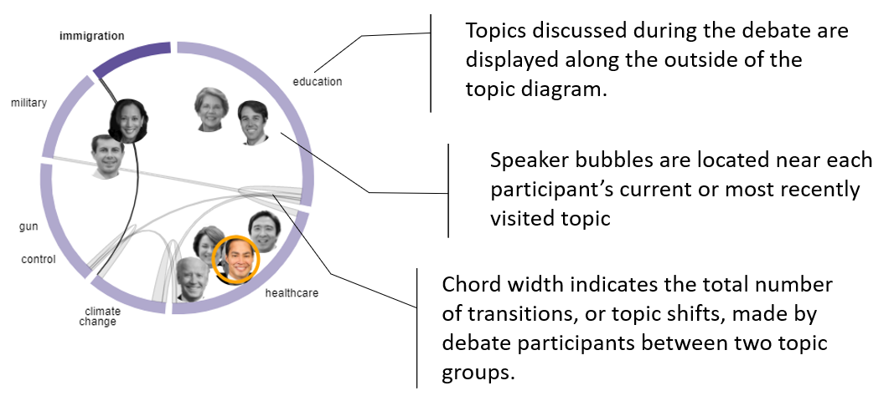
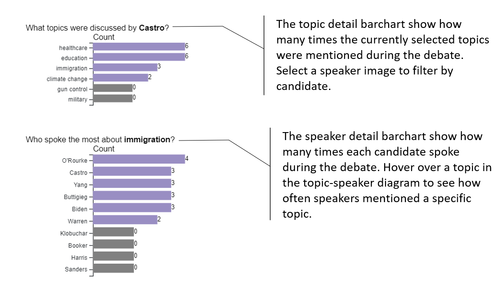
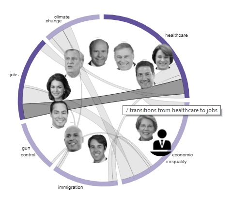

The timeline shows a birds-eye view of the debate, from the first few utterances at the top of the timeline to the last at the bottom of the timeline. It is split into two sections: speaker interactions and topic distributions. A speaker interaction is a catch-all term that includes attacks, agreements, interruptions, and direct references to other speakers or well-known public figures (e.g. Donald Trump and Barack Obama):
The timeline also shows what topics were discussed at various points in the debate. For example, if a speaker starts talking about healthcare reform and the economic implications of private insurance, a line is placed in the healthcare and economic inequality columns. This produces clusters of marks that make it easy to spot when a topic is being discussed in great detail. Click on any mark in the timeline to jump to that moment in the transcript!
The topic-speaker diagram summarizes what topics all of the speakers have discussed, individually and as a group.
 The topic diagram shows the selected topics on the outside of the circle, arranged so topics that are frequently mentioned together in the debate and placed side-by-side. All of the speakers can be seen in the center of the circle. Their icons will move to follow the topic trajectory of the debate as you scroll through the transcript. Relationships between topics are summarized by the chords that stretch across the circle to connect the topics. A thicker chord implies a stronger connection; in other words, two topics that are frequently mentioned together or one after another will have a thicker chord than two topics that are not brought up together by the speakers or the moderators. For example, in the topic diagram from the first Democratic primary debate in June 2019, we can see a strong connection between healthcare and jobs, but no connection between climate change and gun control.
DebateVis is built for interactive exploration! Use the topic selection box to pick the topics you're most interested in to see them reflected in the visualization. Click on any of the marks in the timeline to navigate to that moment in the transcript. Hover over speaker photos in the topic diagram to learn more about their debate performance. Click Select a different debate to check out the other debate transcripts we have available within DebateVis.
The timeline shows a birds-eye view of the debate, from the first few utterances at the top of the timeline to the last at the bottom of the timeline. It is split into two sections: speaker interactions and topic distributions. A speaker interaction is a catch-all term that includes attacks, agreements, interruptions, and direct references to other speakers or well-known public figures (e.g. Donald Trump and Barack Obama). A green arrow indicates agreement, a red arrow indicates an attack, and a black arrow indicates a reference that couldn’t be easily placed in either of the previous categories. An arrow of any color with a slash through it indicates an interruption. Here’s an example of Cory Booker agreeing with Julian Castro in the June 2019 Democratic primary debate. The arrow goes from Booker to Castro to show that Booker initiated the interaction.
The timeline also shows what topics were discussed at various points in the debate. For example, if a speaker starts talking about healthcare reform and the economic implications of private insurance, a line is placed in the healthcare and economic inequality columns. This produces clusters of marks that are easy to spot when a topic is being discussed in great detail. Click on any mark in the timeline to jump to that moment in the transcript!
The topic diagram shows the selected topics on the outside of the circle, arranged so topics that are frequently mentioned together in the debate and placed side-by-side. All of the speakers can be seen in the center of the circle. Their icons will move to follow the topic trajectory of the debate as you scroll through the transcript. Relationships between topics are summarized by the chords that stretch across the circle to connect the topics. A thicker chord implies a stronger connection; in other words, two topics that are frequently mentioned together or one after another will have a thicker chord than two topics that are not brought up together by the speakers or the moderators. For example, in the topic diagram from the first Democratic primary debate in June 2019, we can see a strong connection between healthcare and jobs, but no connection between climate change and gun control.
Two bar charts provide extra details about the topics and speakers in the debate, including the total number of utterances for each speaker and for each topic. Hover over a speaker or a topic in the topic diagram to filter the information in the bar charts.
DebateVis is built for interactive exploration! Use the topic selection box to pick the topics you're most interested in to see them reflected in the visualization. Click on any of the marks in the timeline to navigate to that moment in the transcript. Hover over speaker photos in the topic diagram to learn more about their debate performance. Click Select a different debate to check out the other debate transcripts we have available within DebateVis.
For best performance, please use Chrome on a desktop computer.
Transcripts for the 2019 primary debates were obtained from NBC News. All topic labels are coded by hand. Sentiment scores are calculated for each statement using TextBlob. Sentiment scores indicate the sentiment of a statement, ranging from -1 (most negative) to 1 (most positive).
The topic diagram shows a summary of the most frequently mentioned topics in the debate. Topics are listed on the outside of the circle. A chord diagram inside the circle shows topic switches that occured during the debate. Topic switches and agenda setting can be used strategically by debate participants to improve their performance.
DebateVis was created by an interdisciplinary team of researchers at Northeastern University, including Laura South, Micha Schwab, Nick Beauchamp, Lu Wang, and Michelle Borkin. This work is funded by a Tier 1 grant from Northeastern University.
Click the button below if you would like to answer a few questions about your experience with DebateVis. Thank you!